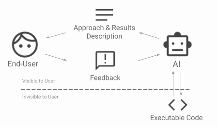

Welcome wary traveler of cyberspace! I'm Yuvraj (pronounced "yoo-v-raj"). I'm broadly interested in reducing the gulf of exectuion between ours ideas and putting them into code.
More description

Research

Calibration of Large Language Models on Code Summarization
Yuvraj Virk, Premkumar Devanbu, and Toufique Ahmed
https://arxiv.org/pdf/2404.19318
We leverage the fact that LLMs are optimized to imitate humans to use their token probabilites for a well-calibrated confidence indicator of whether an LLM-generated code summary is simlar to what a developer would've wrote.

Verifiability of AI-generated Data Analysis by Business End-Users
Yuvraj Virk, Dongyu Liu
Draft
Here we do cool stuff